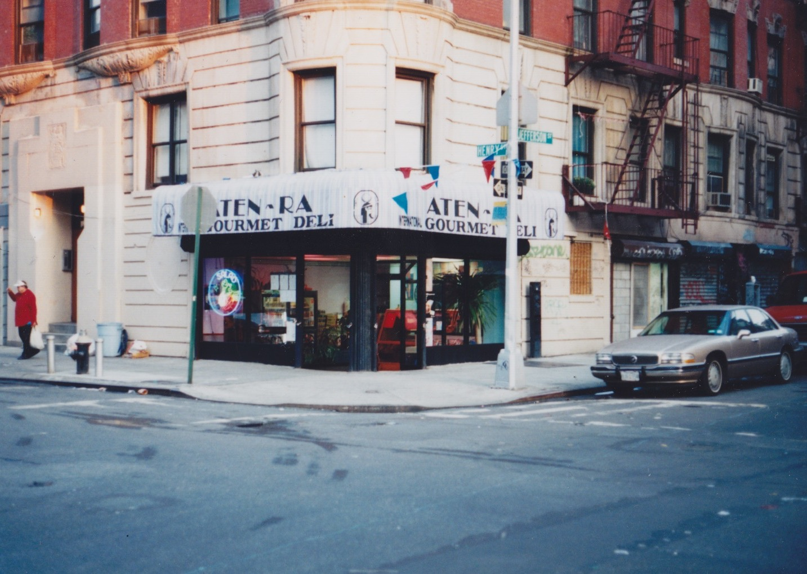
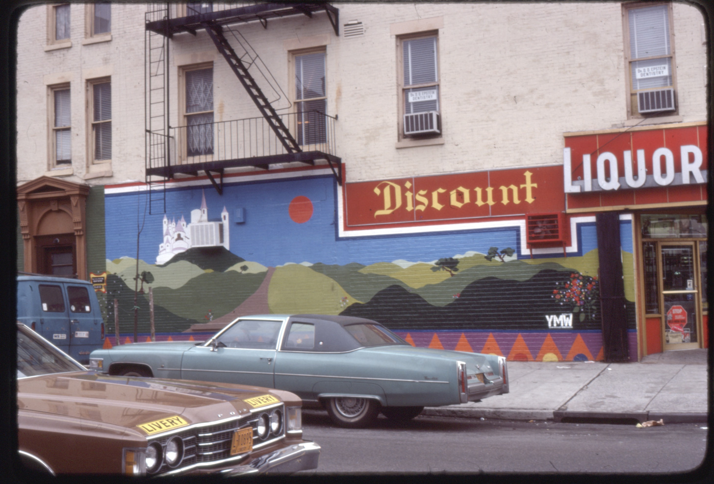
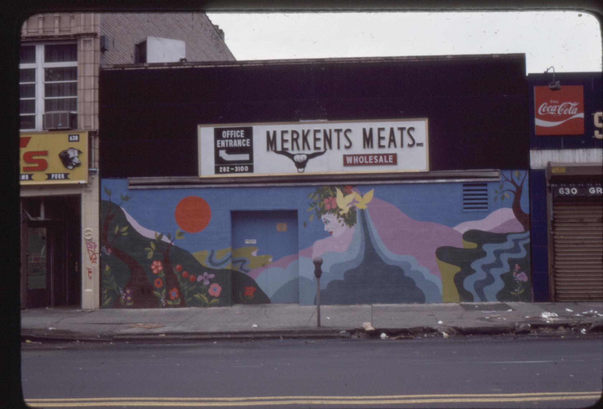
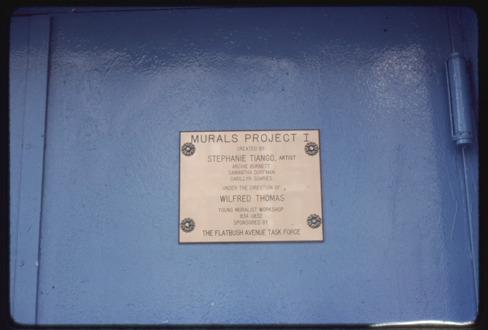
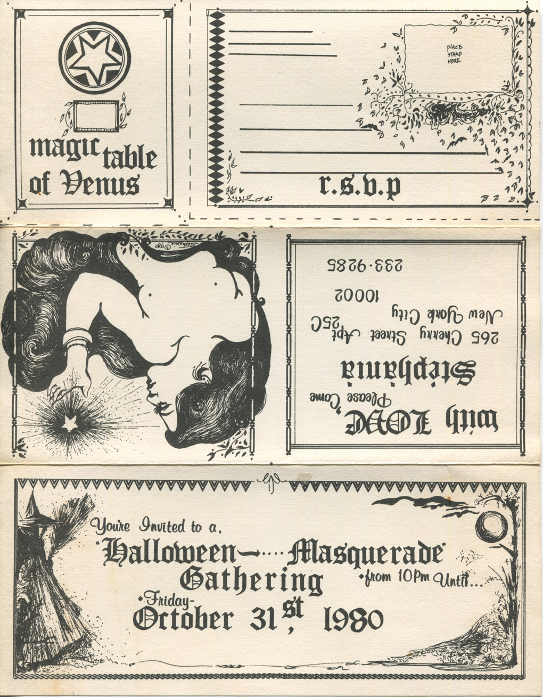
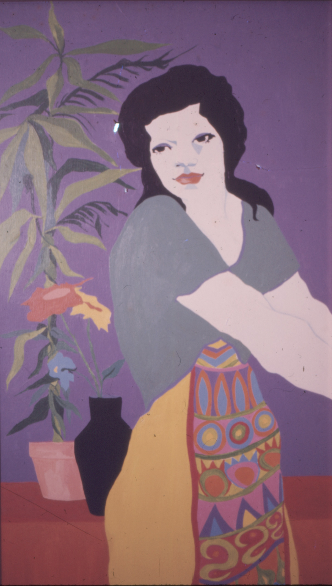
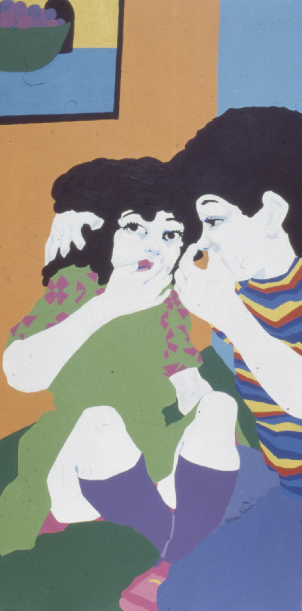
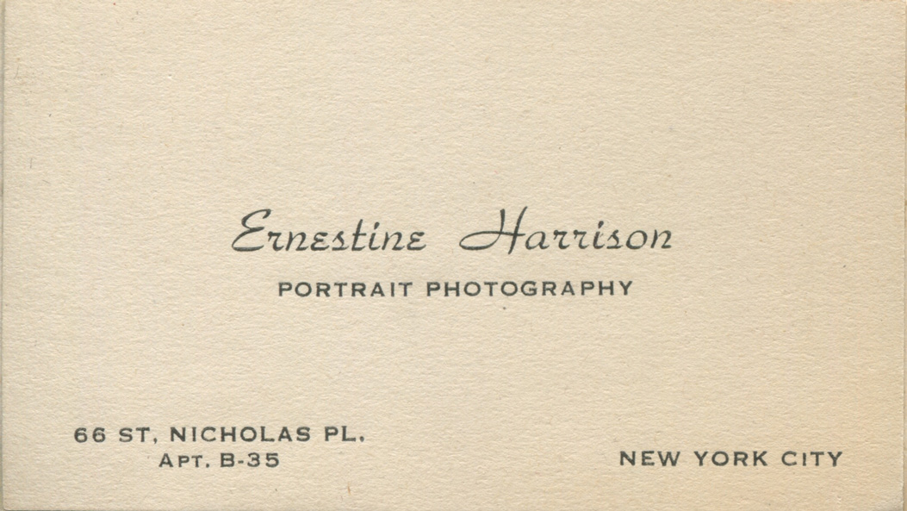
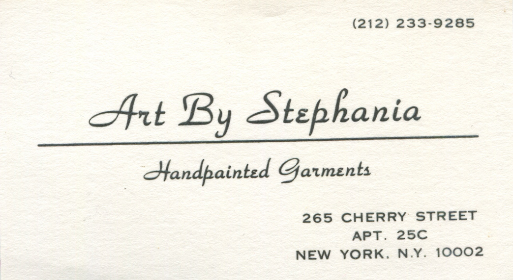
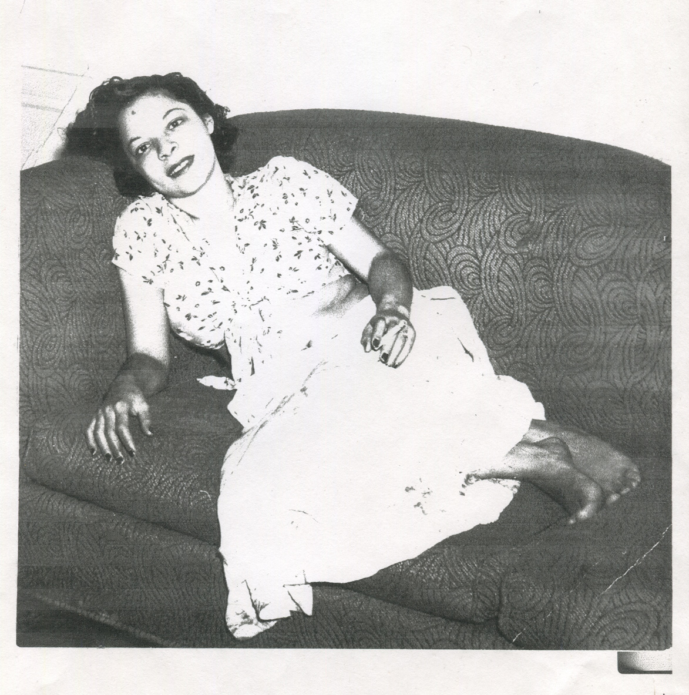

177 Henry St, LES


↑ Mohammed ran a gourmet deli named Aten-Ra. Two doors down, grammy ran her own shop, a gift-shop boutique, called Aten-Ra-Tu. These shops were catty corner to Gouverneur hospital, grammy's day job at the time. ↓ Here she is with some of her hospital coworkers at the deli for lunch.

My parents worked at the restaurant briefly. Pictured above is dad at the deli meat slicer, around 1990.
180 Washington Ave, Brooklyn
 She painted murals all around the city. These particular murals were done through the Young Muralist Workshop sponsored by The Flabush Avenue Task Force.
Grammy has had many names, she quickly took the names of her romantic partners. In this plaque — her name reads Stephanie Tiancgo.
265 Cherry St. LES
↑ Grammy designed this elaborate invitation for a halloween party at her place in 1980. ↓ Some paintings from her time at Pratt, around 70's (?).
 66 St. Nicholas Pl, Sugar Hill
↑ My great-grandmother, Grammy's mom, Ernestine was a photographer. ↓ Grammy clearly used this as direct inspiration when designing her own business card.
 ↑ Grammy loves to take photos of photos, copies of copies. She has xeroxed this photo of Ernestine many times. ↓ Also a fan of photoshop, this is a digital collage of a childhood self-portrait in the sky.